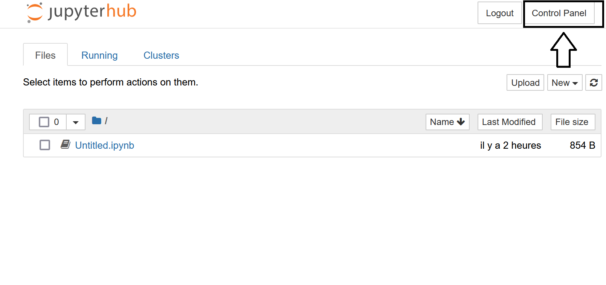
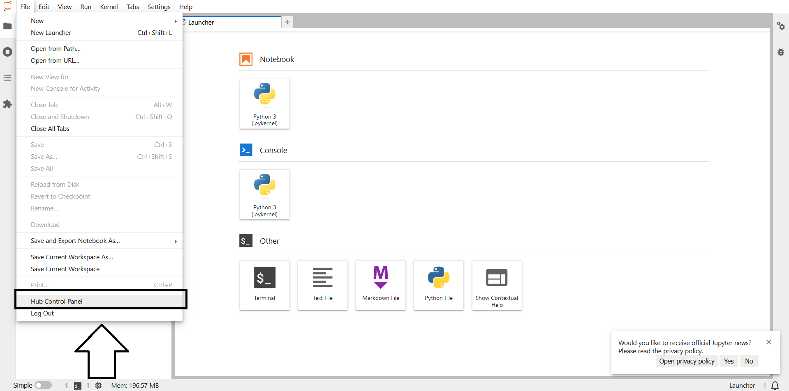
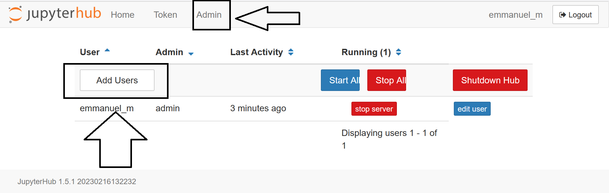
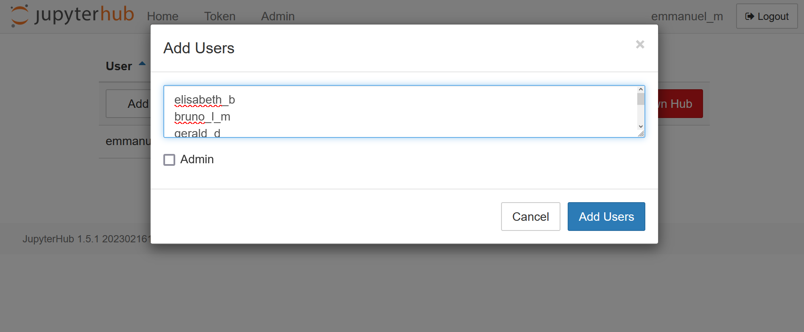
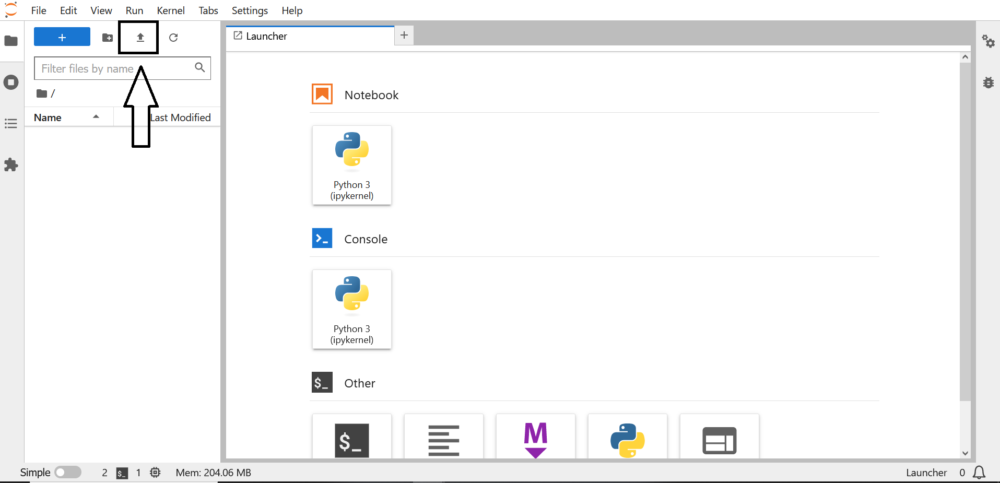

Comment paramétrer TLJH à votre usage ?
Contents
Comment paramétrer TLJH à votre usage ?#
Les actions présentées dans cette partie sont réalisées directement dans le JupyterHub. Elles sont donc indépendantes du type de déploiement que vous avez effectué précédemment (déploiement cloud ou sur serveur privé).
Comment créer des comptes apprenants ?#
Pour créer des comptes apprenants ou des comptes formateurs (admin), vous devez aller dans la partie “Control Panel” en haut à droite de l’écran si vous êtes dans l’interface de Jupyter Notebook :

Si vous êtes dans l’interface de Jupyter Lab, cela se situe dans l’onglet “File” :

Dans le “Control Panel”, cliquez sur l’onglet “Admin”, puis sur “Add Users” :

Il ne vous reste plus qu’à ajouter votre liste d’apprenants (un par ligne) :

Vous pouvez maintenant tester les nouveaux comptes en vous déconnectant et en vous reconnectant avec un nom d’apprenant ajouté. Le mot de passe est enregistré à la première connexion.
Information
Pour plus de détails, vous pouvez regarder cette vidéo : 
Lien vers d’autres méthodes de connexion dans la documentation officielle :
Comment installer des bibliothèques Python ?#
Pour installer des bibliothèques Python, il vous suffit d’ouvrir un terminal dans un compte d’administrateur de JupyterHub et d’exécuter la commande suivante :
sudo -E pip install numpy
L’installation des bibliothèques est effectuée dans tous les espaces du JupyterHub (apprenants et admin). Vous pouvez le vérifier en vous connectant au JupyterHub avec un compte apprenant, en ouvrant un notebook et en important la bibliothèque installée.
Information
Pour plus de détails, vous pouvez regarder cette vidéo : 
Lien vers la documentation officielle : https://tljh.jupyter.org/en/latest/howto/env/user-environment.html
Comment ajouter du contenu dans TLJH ?#
Sans dépôt Git#
Dans l’interface du Jupyter Lab, vous pouvez directement charger des fichiers (notebooks, jeux de données) en cliquant sur la flèche en haut à gauche :

Vous pouvez ensuite ouvrir un terminal et exécuter les commandes suivantes (en remplaçant “nom admin” pour votre nom d’administrateur et “nom apprenant” pour votre nom d’apprenant) :
cd ..
sudo cp jupyter-<nom admin>/Exercice.ipynb jupyter-<nom apprenant>/Exercice.ipynb
sudo chmod 666 jupyter-<nom apprenant>/Exercice.ipynb
Si vous souhaitez effectuer l’envoi pour tous les apprenants, vous pouvez exécuter dans le terminal un script Python de ce type :
import os
import shutil
def copy_file(students, admin_name="emmanuel_m", file_name="Exercice.ipynb"):
path = "/home"
for name in students:
src = os.path.join(path, f"jupyter-", file_name)
dst = os.path.join(path, f"jupyter-{name}", f"Exercice_{name}.ipynb")
shutil.copyfile(src, dst)
os.chmod(dst, 0o666)
Vous pouvez laisser l’apprenant effectuer l’exercice. Quand l’exercice est fini, vous pouvez le récupérer dans le terminal côté formateur avec la commande suivante :
sudo cp jupyter-<nom apprenant>/Exercice.ipynb jupyter-<nom admin>/Exercice.ipynb
Si vous souhaitez récupérer l’ensemble des exercices des apprenants pour éteindre la machine virtuelle du JupyterHub et corriger les exercices sur votre ordinateur, vous pouvez exécuter un script Python de ce type dans le terminal :
import os
import shutil
def copy_file(students, admin_name="emmanuel_m"):
path = "/home"
for name in students:
src = os.path.join(path, f"jupyter-{name}", f"Exercice_{name}.ipynb")
dst = os.path.join(path, f"jupyter-{admin_name}/Results", f"Exercice_{name}.ipynb")
shutil.copyfile(src, dst)
print(src, dst)
shutil.make_archive("results", 'zip', os.path.join(path, f"jupyter-{admin_name}", "Results"))
Information
Pour plus de détails, vous pouvez regarder cette vidéo : 
Avec un dépôt Git#
La bibliothèque Python nbgitpuller permet de distribuer du contenu de formation directement dans les espaces du JupyterHub à partir d’un dépôt Git.
Tout d’abord, il faut installer la bibliothèque nbgitpuller dans le JupyterHub. A partir d’un terminal d’un compte administrateur du JupyterHub, exécutez la commande suivante :
sudo -E pip install nbgitpuller
Ensuite, il faut créer un dépôt Git (sur Gitlab ou Github par exemple) avec le contenu de la formation. Il ne reste plus qu’à générer le lien à transmettre aux apprenants pour que les contenus des espaces du JupyterHub soient automatiquement mis à jour depuis le dépôt Git. Ceci s’effectue facilement à cette adresse : https://hub.jupyter.org/nbgitpuller/link
Information
Pour plus de détails, vous pouvez regarder cette vidéo : 
Comment définir le Jupyter Lab comme interface par défaut ?#
Pour définir le Jupyter Lab comme interface par défaut, il suffit de modifier le paramètre
user_environment.default_appdu JupyterHub. Pour cela, il suffit d’ouvrir un terminal dans le JupyterHub et d’exécuter la commande suivante :Ensuite, vous devez relancer le JupyterHub en exécutant la commande suivante :
Vous devez vous déconnecter du JupyterHub et en vous reconnectant, vous devez vous trouver dans une interface de Jupyter Lab.
Information
Pour plus de détails, vous pouvez regarder cette vidéo :
Lien vers la documentation officielle : https://tljh.jupyter.org/en/latest/howto/env/notebook-interfaces.html